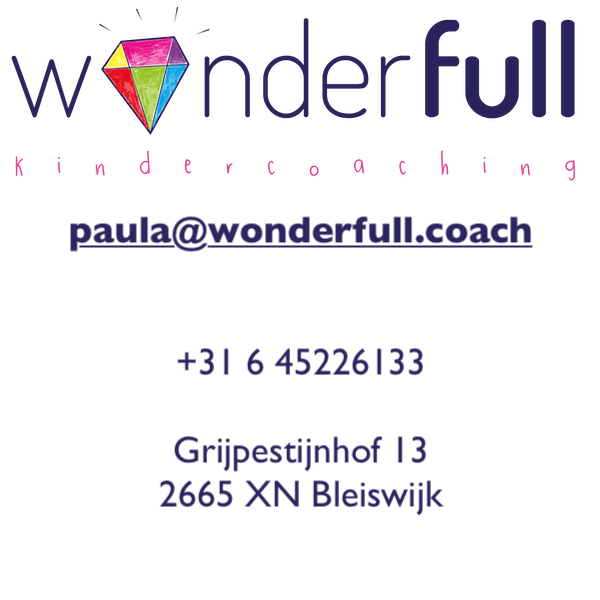

Je bent misschien aan het kijken of kindercoaching iets voor je kind zou kunnen zijn. Misschien maak je je zorgen over je kind, zit je kind niet zo lekker in zijn vel, zou je (weer) beter contact met je kind willen. Misschien is de juf of meester van je kind wel met je in gesprek gegaan over zijn/haar gedrag in de klas. Je zoekt handvaten, informatie, ideeen of steun. Gelukkig ben je niet alleen in je zoektocht, zoeken doen we namelijk allemaal.
Het mooie is dat je kind een wonder is; het heeft alles in zich heeft om lekker in zijn/haar vel te komen. Je kind zit vol met unieke kwaliteiten en talenten. Tijdens de coaching gaan we daarnaar op zoek en ontdekken we wat je kind helpt om op te bloeien. Zo krijgt je kind meer vertrouwen in zichzelf en ook jij als ouder krijgt meer vertrouwen en rust in huis. Omdat kinderen zo snel leren hebben ze vaak maar een paar sessies nodig om stappen te zetten, die ze de rest van hun leven kunnen gebruiken. Wonderfull!
Kindercoaching is kortdurende hulp aan kinderen. Ik werk met kinderen tussen de zes en twaalf jaar. Mijn hulp richt zich op de kwaliteiten en oplossingen van je kind in plaats van op de problemen (waar vaak al veel aandacht naar toe gaat). Ik vertel niet wat je kind zou moeten doen. Samen gaan we op zoek naar waar het juist wel goed gaat en hoe je kind dit ook op andere gebieden in kan zetten. Zo speuren we naar de krachten van je kind, versterken we dit zodat je kind weer gaat stralen!
Kindercoaching is speels, creatief en positief. We gaan natuurlijk niet op een stoel zitten praten, maar gaan aan de slag met wat jou kind leuk vindt.
Als ouder ben je onmisbaar in het coachingstraject. Ik vind het heel belangrijk dat ouders en kind samen een verandering inzetten, daarom betrek ik je/jullie actief bij de coaching. Ook kijken we naar wat school hierin zou kunnen doen.
Kindercoaching is laagdrempelig, er wordt geen dossier aangelegd en is zonder wachttijden. Je kunt gelijk beginnen.
Het eerste contact is een gratis kennismakingsgesprek. Hierbij luister ik naar je vragen en je verwachtingen en vertel ik je over hoe ik werk. Deze kennismaking kan telefonisch of face to face zijn. Hebben we er allebei een goed gevoel over, dan starten we een coachingstraject. Ik mail je dan een vragenformulier dat je mag invullen en we plannen een intakegesprek met je kind er bij.
Tijdens het intakegesprek bespreken we de veranderwens. Samen kijken we naar wat je kind zelf wilt veranderen. We formuleren doelen waar je kind (en jij!) blij van wordt. Soms is het nog onduidelijk wat er precies speelt. Dan starten we de coaching en gaandeweg zal de hulpvraag van kind duidelijk worden. Het intakegesprek is ook het moment om samen te ontdekken of ik de coach ben die bij jullie past.
Na de intake plannen we drie individuele coachingsessies voor je kind. De eerste coachingsessie is gericht op beter kennis maken met elkaar en vertrouwen opbouwen. Het is belangrijk dat je kind zich ontspannen en veilig voelt. Vervolgens kijken we hoe de gewenste situatie er voor je kind uitziet en samen gaan we op zoek naar manieren om daar komen. We kijken wat de eerste stapjes zijn en oefenen die. Natuurlijk heeft je kind geen zin om stil te zitten en gaan we spelend te werk. Dat kan van alles zijn; schilderen, playmobil, hutten bouwen, een potje voetbal, spelletjes, metaforen, verhalen, ademhalingsoefeningen, koekjes bakken… net wat bij jou kind het beste past. Zelf ben ik dol op dansen, muziek en theater, dat zet ik graag in. Aan het einde van de sessie mag je er even bij komen. Ik vraag je kind dan te vertellen waar we aan hebben gewerkt.
Na 3 of 4 sessies plannen we een oudergesprek waarin we de voortgang van je kind bespreken. Samen kijken we of er eventuele verder coaching nodig is. Als we besluiten dat er onvoldoende vooruitgang is kan het zijn dat een andere vorm van hulpverlening beter aansluit. Samen zoeken we dan naar een andere vorm van hulp.
Hi! Ik ben Paula, ik ben 35 jaar, vrolijk, vriendelijk en vind het heerlijk om met kinderen te werken. Na mijn studie Sociaal Pedagogische Hulpverlening heb ik een aantal jaar met veel plezier creatieve kinderprojecten gedaan op basisscholen en in buurthuizen. Daarnaast heb ik op verschillende plekken gewerkt met kinderen (vrouwenopvang, animatiewerk, SoVatrainingen, kinderopvang, BSO’s, logeerhuizen, weeshuizen in het buitenland, kinder- en tienerkampen e.d.).
Samen met mijn man heb ik drie dochters (1, 6 en 8 jaar). Met ons gezin hebben we 4,5 jaar gewoond in India, waar ik werkte met gezinnen in sloppenwijken. In ogenschijnlijk hopeloze situaties heb ik gezien dat ouders weer hoop kregen. We hielpen ouders te zien hoe bijzonder ze zijn en hoeveel ze te geven hebben. Daar vanuit zag ik ze in beweging komen. Ze zetten kleine stapjes richting hun doel waarbij hun leven en hun gezin veranderde en daarbij ook de levens van de mensen om hen heen. Fantastisch!
Na onze terugkeer in Nederland ben ik op zoek gegaan naar wat ik hier kan geven aan de mensen om me heen. Ik besloot de opleiding Kindercoaching te doen en heb gewerkt als gezinscoach. En nu ook eigenaar van Wonderfull Kindercoaching! Ik vind het erg leuk om samen met ouders en individueel met kinderen te werken zodat het kind zijn eigen kracht vindt en gaat stralen!
Hi! Wat leuk dat jij op mijn site komt kijken!
Ik ben Paula en ik hou van dansen, muziek, knutselen en naar buiten gaan. Ik ben mama van drie meisjes en ik vind het heel erg leuk om kinderen te helpen. Bijvoorbeeld met:
De eerste keer gaan we met je papa of mama kijken naar wat jij graag zou willen veranderen of zou willen leren, dat noemen we de veranderwens. De keer daarna gaan samen spelen met wat jij leuk vindt. Bijvoorbeeld knutselen, hutten bouwen, koekjes bakken, spelletjes doen, naar buiten, dansen, toneelspelen… of heb je nog een beter idee? Ondertussen gaan we kijken naar wat jij al goed kan en waar je trots op bent. Bij mij moet niks. Ik heb alle tijd voor je en vind het leuk om te luisteren naar wat je te vertellen hebt. Ik ben benieuwd naar wat we samen gaan ontdekken!
De coaching kan in mijn praktijkruimte in Bleiswijk plaatsvinden of bij je thuis. Ik werk in de omgeving Lansingerland, Zoetermeer, Rotterdam en Den Haag.
Kan een afspraak niet doorgaan? Geen probleem, laat het me wel op tijd weten. Afspraken kunnen tot 24 uur van te voren worden geannuleerd of verplaatst, zonder dat er kosten berekend worden.
Mijn werkdagen zijn dinsdag van 09.00 - 13.45 uur en woensdag van 09.00 - 17.30 uur en eventueel op zaterdag. Op deze dagen kunnen we de intake, coachingsessiesplannen en evaluatiegesprekken plannen.
Ik vind het leuk als je contact met me opneemt! Als je vragen hebt over de opvoeding, over je kind of over kindercoaching. Ook als je geen coaching voor je kind wilt maar gewoon even vrijblijvend en kosteloos wilt sparren, mag je me bellen.
Mijn werkdagen zijn dinsdag van 09.00 - 13.45 uur en woensdag van 09.00 - 17.30 uur. Dan ben ik het beste bereikbaar, maar je kunt me ook buiten die tijden proberen te bereiken.
